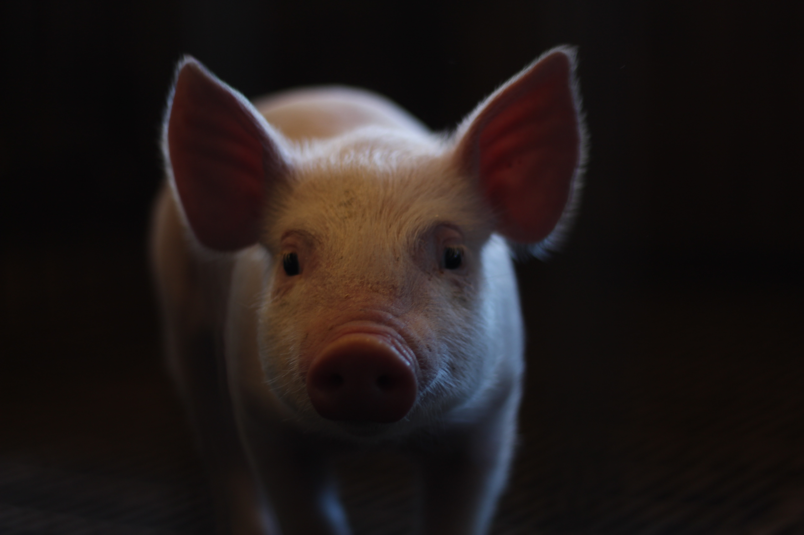

-
This is the story of a pig named Oinkelia.
 -
There is no photographic evidence of this, but Oinkelia was a very fancy pig and she loved to wear dresses.

-
Her favorite food was rice. She would often be found at the nearest dining establishment, wearing a beautiful dress and eating rice.

-
The end.